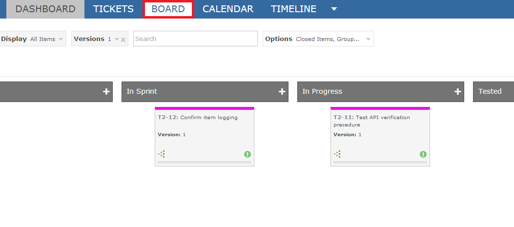
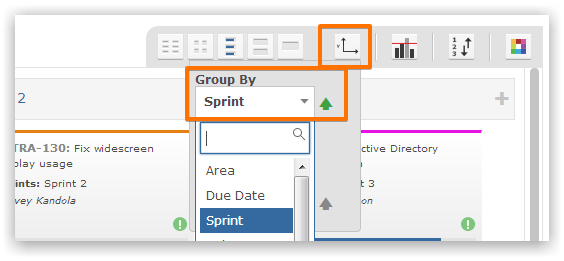
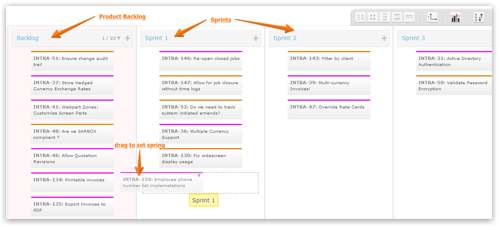
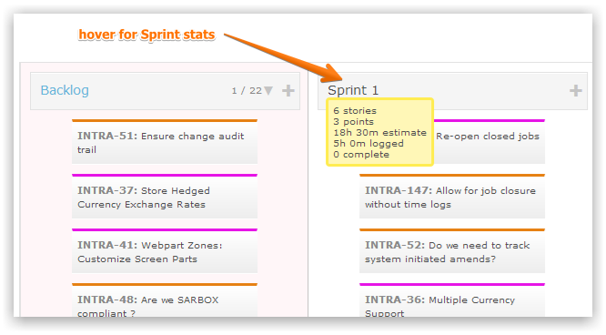

The Planning Board provides visual surface that allows you to drag-drop cards to set values.

Set the board to group by sprints.

Drag-drop items from the Product Backlog into any Sprint. You can drag-drop from one column to any other column.

Hovering over the sprint will show statistics for the sprint.
